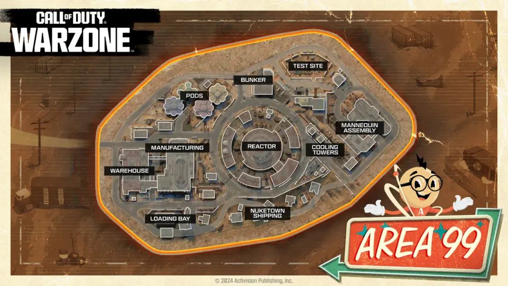

El Área 99, también conocida como la Estación de Armas Echo Ridge, es el último y más esperado mapa que se suma a la experiencia de Warzone Resurgence. Este lugar, diseñado por Treyarch, está profundamente inspirado en el icónico mapa de Nuketown, ampliando sus características en un entorno mucho más vasto y peligroso.
Situado en el desierto de Nevada, el Área 99 es un sitio de pruebas militares abandonado que data de la década de 1950. Originalmente construido para experimentar con armamento nuclear y otras tecnologías avanzadas, el sitio fue clausurado tras un catastrófico accidente en el reactor, dejando tras de sí un paisaje marcado por el desorden y la desolación. El mapa es un homenaje al estilo retrofuturista de los años 50, con toques de Art Decó y arquitectura de la época, mezclando elementos nostálgicos con una atmósfera tensa y aterradora.
